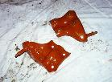
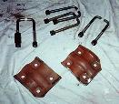
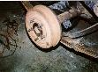

Are you tired yet of dragging, bending, and breaking your axle u-bolts on rocks? Well flip your u-bolts to gain ground clearance and protect them from damage. I was able to do the u-bolt inversion for around $50 and it only took me a couple of hours.
 The first thing that is needed to perform a u-bolt inversion are u-bolt plates from an 80s 1/2 ton Dodge pickup or Dodge Ramcharger. There are probably other sources for plates like these, but these plates are pretty easy to find. I purchased some u-bolt plates from an auto recycler for less than $20. You should be able to pick them up for next to nothing since they are not exactly an item that normally generates any revenue for an auto recycler.
The 80s Dodge Ramcharger and 1/2 ton pickup use a Dana 44 rear end, so the plates will work for for any Jeep with a Dana 44 or AMC 20 rear end. The CJ AMC 20 uses a slightly smaller tube, so you might want to grind the plates a bit to get a better fit. The Dodge trucks are spring over in the rear and the plates are curved to fit a Dana 44 with square u-bolts attaching the axle to the spring.
The Dodge plates have a shock mounted integrated into the plate. Since the plates are run upsidedown from the way they are run on the Dodge, the shock mount is really to high to be useful. I cut them off with a circular hand saw with a metal cutting blade.
 After you have aquired some u-bolt plates, you need to get some u-bolts. I went to my local spring shop (Rocky Mountain Spring in the Springs) and had custom square u-bolts made 4" long and 2.5" wide. The cost was only $26 for these u-bolts.
 The last item needed is some way to attach the shock to the axle. On CJs, the shock bolts to the u-bolt plate. What I did to resolve this problem was purchase some Con-Fer shock mounts for $5 and weld them to the axle tube. You could fabricate your own shock mounts and weld them on, but for the the price, it wasn't worth it to me. If you don't have access to a welder, it would probably only take a professional welder a few minutes to attach the shock mounts for you.
If the idea of welding shock mounts does not appeal to you, there is one other option that Chris Kutish came up with. Chris took a small piece of 3/4" steel and machined out grooves in it for the square u-bolts. Then he drilled it and tapped it for a replaceable shock mount stud. He also machined down the leading and trailing edges so it would slide over rocks easier. One advantage of this approach is the force of the u-bolts is spread out over the springs. This approach also keeps the shock a bit lower than the weld on brackets which may provide more articulation. A disadvantage of this approach is you lose about a quarter inch of ground clearance and it is much more time consuming to fabricate the plates than weld on the mount.
After the shock mount was welded on and painted, I put the Jeep on jack stands, removed the old u-bolts, put the plate on top of the axle tube, and bolted on the square u-bolts with the nuts on the top.
I first saw this u-bolt inversion done on a CJ-7 owned by Rick Borios.
{kind=link}
{kind=link}
{kind=link}
{kind=link}
{kind=link}